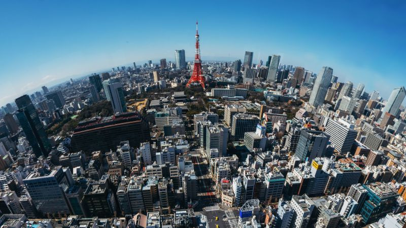

Favorite Things
Favorite Places
Here is a list of my favorite places to visit
London

London is my favorite place to visit. I love to visit Westminster Abbey,the Tower of London and ride on the Centennial Wheel
Things to do:
- Riding the Double Decker Buses
- Take a stroll through Hyde Park
- Visit Buckingham Palace
- Shop at Camden Market
Tokyo

Tokyo is my favorite place that I havent been to
Things to do:
- Buy a bunch of merchandise
- Visit the set of japanese game show
- Eat the best sushi in the world ( Jiro Sushi )
- Visit Nintendoland
Chicago

Chicago is the home of some of the world's greatest sports teams and icons. It also has some of the best chefs and restaurants in the world.
Things to do:
- See a Bulls game at the United Center
- Stroll down N. Michigan Ave.
- Check out the SkyDeck at Willis Tower (Sears Tower)
- See live comedy at The Second City